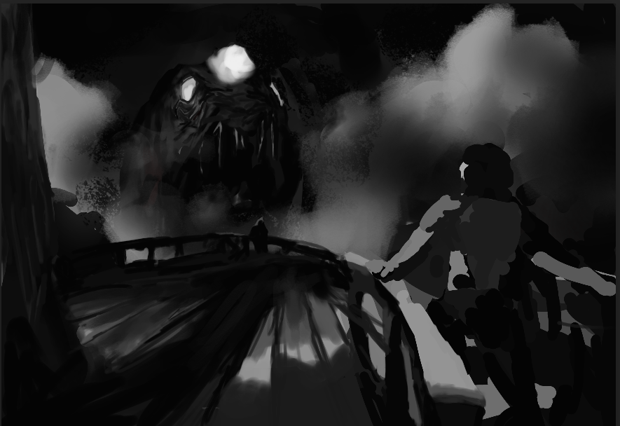

Sessio 1

Yhteenveto
Neljän matkaajan joukko kokee kamalia, kun Naivete-laivaa höykyttää Paljannon sumusta noussut olentojen kimara.
Sumu nousee
Rhoja puhuttaa kannella laivan kapteenia. Magdalena ja Robin vuoroin pelottavat ja ärsyttävät mastoissa työskenteleviä kääpiöitä.
Ruuman pimiössä
Rory löydetään laivan uppeluksissa olevasta ruumasta. Kapteeni ei kuitenkaan rankaise tätä, vaan kehottaa tulemaan esille, esimerkiksi laivalla järjestettäviin musiikkiesityksiin.
Sumu leviää
Rhoja ja Magdalena pelästyttävät matruusin, joka heidän vuoksensa huomaa laivan ikkunaruudusta sisään tulvivan sumun. Tämä ryntää kertomaan asiasta kapteenille.
Paniikkia ja pippaloita
Paniikki laivalla alkaa levitä, vaikka matkustajat eivät sitä alkaneiden musiikkijuhlien vuoksi huomaa. Nelikko löytää kapteenin ravaamasta ruumaan, matruusin yrittäessä estää sinne pääsyn.
Naiveten kohtalo
Magdalenan kimppuun hyökkää lonkeroinen olento. Robin päättää ottaa selvää kapteenin aikeista ja löytää hänet pieksemästä merenneidon kaltaista olentoa ruumassa. Rory saa nähdä, kun suuri lyhtykalan näköinen olento räväyttää itsensä laivaa vasten ja riepottaa sen täysin ympäri.
Näky
Rhoja ja Magdalena saavat näyn Jumalallisesta äänestä, joka kätkeytyy pimeässä Magdalenan pimeääkin mustemman kirjan sisään ja katoaa tyystin. Koko seurue herää Galden-saarelta.
Galden
Galden-saaren autiossa rantamaassa ei näy muuta, kuin Naiveten hylky ja ruumiskasoja. Laiha ja kalpea vanhus esittelee itsensä seurueelle ja kertoo joidenkin eloonjääneiden olevan vielä laivassa.